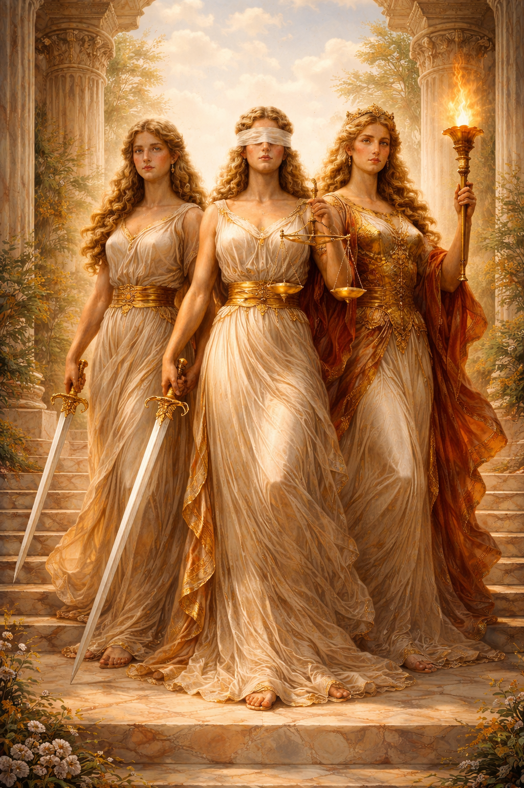
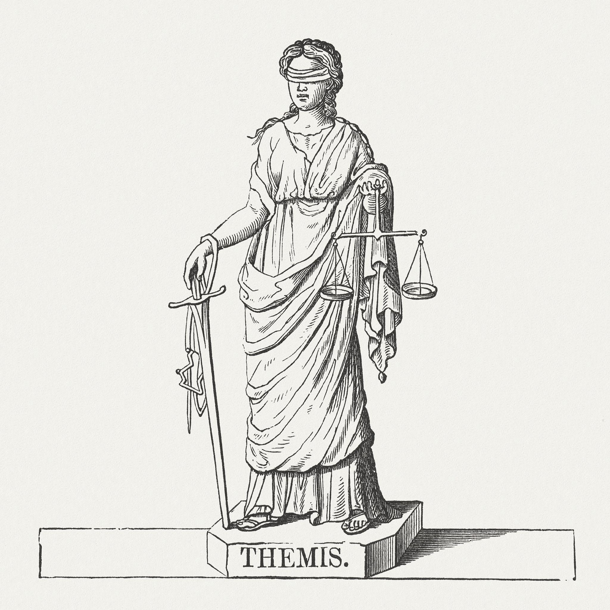
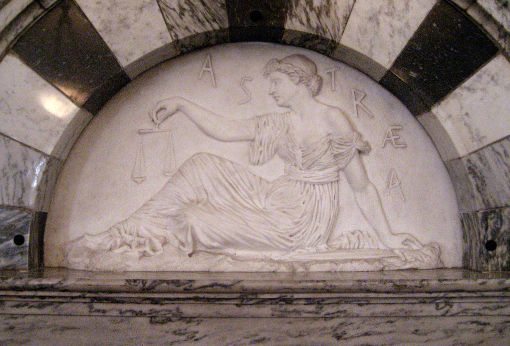
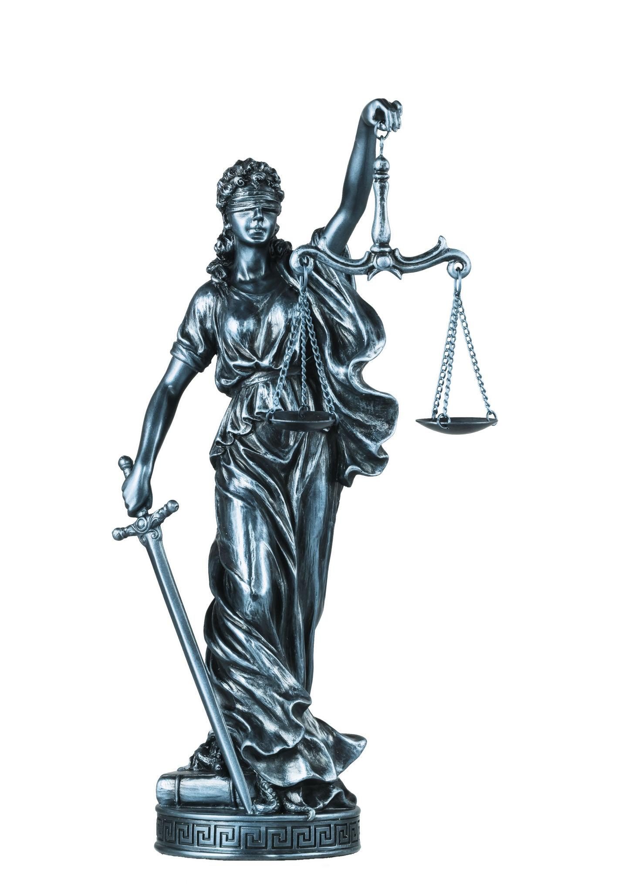

Uma reflexão mitológica sobre a origem da ideia de justiça no imaginário grego e romano.

Representação alegórica das três dimensões da justiça: ordem cósmica (Themis), justiça moral entre os homens (Dike) e justiça institucional (Iustitia).

No princípio, quando o céu ainda repousava pesado sobre a terra, nasceu Themis, filha de Urano e Gaia. Ela não nasceu para guerrear como os Titãs, nem para destruir como os gigantes. Nasceu para algo mais profundo: manter o equilíbrio invisível que sustenta tudo.
Quando Zeus venceu a guerra contra os Titãs e assumiu o trono do Olimpo, foi Themis quem se sentou ao seu lado. Não como ornamento, mas como consciência. Antes de cada decisão, Zeus a consultava.
Era ela quem lembrava que até mesmo o rei dos deuses estava submetido à ordem eterna.
Certa vez, os deuses discutiam se deveriam intervir nas guerras humanas. Alguns defendiam favoritismos; outros queriam punições severas.
Themis permaneceu em silêncio até que Zeus lhe pediu palavra.
— Se a ordem for quebrada pelos próprios deuses, quem sustentará o mundo?
E a discussão cessou.
De sua união com Zeus nasceu Dike, a Justiça viva entre os homens.

Na Idade do Ouro, Dike caminhava livremente entre os humanos. Não havia tribunais, pois não havia necessidade. As promessas eram cumpridas, os pactos respeitados, e ninguém tomava o que não lhe pertencia.
Mas o tempo avançou.
Na Idade do Bronze, os homens tornaram-se violentos. Forjaram armas antes de forjar palavras. Cidades começaram a prosperar à custa da injustiça.
Dike ainda descia às praças. Quando via juízes corrompidos ou reis tiranos, subia ao Olimpo e relatava a Zeus:
— Eles pesam o ouro, mas não pesam a verdade.
Zeus então enviava secas, discórdias ou derrotas em guerra como advertência.
Contudo, na Idade do Ferro, os homens passaram a ignorar qualquer sinal. Riam da justiça. Manipulavam leis. Oprimiam os fracos.
Dike, entristecida, deixou a Terra.
Ao subir aos céus, transformou-se na constelação da Virgem, para que os homens, ao menos olhando para o alto, lembrassem que a justiça ainda existe — mesmo distante.

Séculos depois, em outra terra, os romanos deram corpo concreto à ideia que os gregos haviam cantado.
Nasceu Iustitia.
Ela não caminhava pelas florestas nem subia ao Olimpo. Ela erguia-se nos fóruns, nas basílicas, nas mãos dos magistrados.
Trazia uma balança para pesar argumentos. Uma espada para executar sentenças.
Diferente de Dike, ela não abandonava os homens quando estes erravam. Permanecia ali, exigindo julgamento.
Mas uma antiga tradição simbólica dizia:
Quando os juízes se tornam injustos, a balança de Iustitia inclina-se sozinha.
Quando a lei é manipulada, sua espada enferruja.
E quando a verdade é ignorada, ela fecha os olhos — não por imparcialidade, mas por luto.
A história da justiça no mito antigo pode ser lida como uma sequência:
Themis sustenta a ordem do universo.
Dike protege a moral entre os homens.
Iustitia estrutura a justiça nas instituições.
Os antigos ensinavam:
A justiça nunca desaparece. Ela apenas se afasta quando deixa de ser honrada.